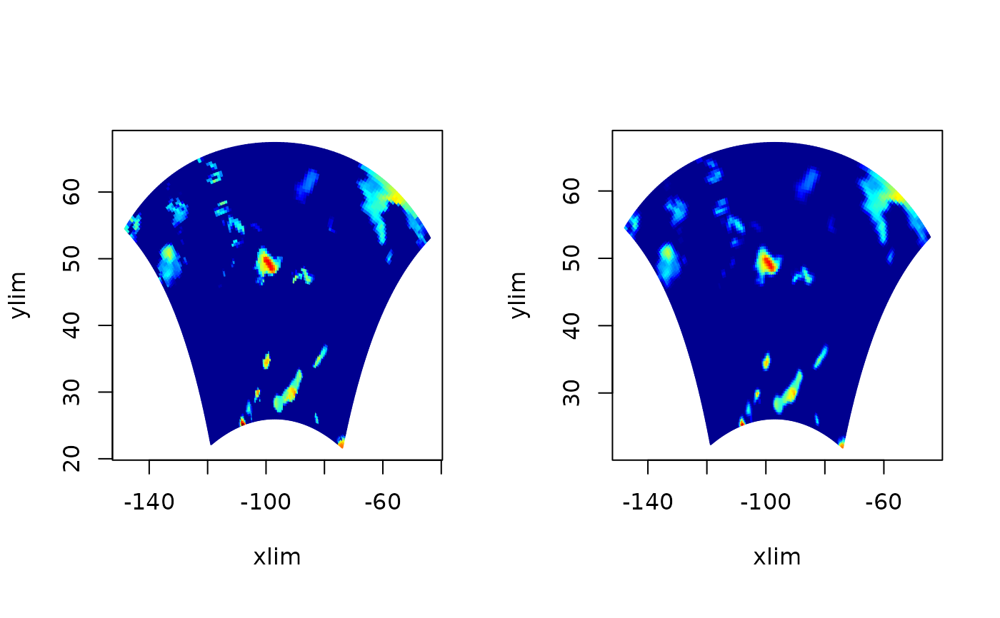
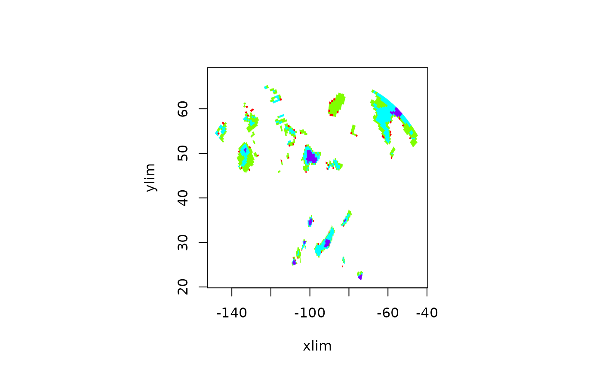
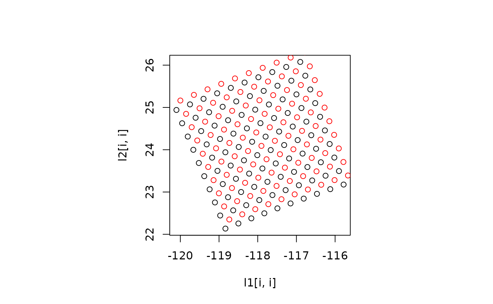

poly.image.RdCreates an image using polygon filling based on a grid of irregular quadrilaterals. This function is useful for a regular grid that has been transformed to another nonlinear or rotated coordinate system. This situation comes up in lon-lat grids created under different map projections. Unlike the usual image format this function requires the grid to be specified as two matrices x and y that given the grid x and y coordinates explicitly for every grid point.
poly.image(x, y, z, col = tim.colors(64), breaks, transparent.color = "white",
midpoint = FALSE, zlim = range(z, na.rm = TRUE),
xlim = range(x), ylim = range(y), add = FALSE, border=NA,lwd.poly=1,...)
poly.image.regrid(x)A matrix of the x locations of the grid.
A matrix of the y locations of the grid.
Values for each grid cell. Can either be the value at the grid points or interpreted as the midpoint of the grid cell.
Color scale for plotting.
Numerical breaks to match to the colors. If missing breaks are
equally spaced on the range zlim.
Color to plot cells that are outside the range specified in the function call.
Only relevant if the dimensions of x,y, and z are the same. If TRUE the z values will be averaged and then used as the cell midpoints. If FALSE the x/y grid will be expanded and shifted to represent grid cells corners. (See poly.image.regrid.)
Plotting limits for z.
Plotting limits for x.
Plotting limits for y.
If TRUE will add image onto current plot.
Color of the edges of the quadrilaterals, the default is no color.
Line width for the mesh surface. i.e. the outlines of the quadrilateral facets. This might have to be set smaller than one if rounded corners on the facets are visible.
If add is FALSE, additional graphical arguments that will be supplied to the plot function.
This function is straightforward except in the case when the dimensions of x,y, and z are equal. In this case the relationship of the values to the grid cells is ambigious and the switch midpoint gives two possible solutions. The z values at 4 neighboring grid cells can be averaged to estimate a new value interpreted to be at the center of the grid. This is done when midpoint is TRUE. Alternatively the full set of z values can be retained by redefining the grid. This is accomplisehd by finding the midpoints of x and y grid points and adding two outside rows and cols to complete the grid. The new result is a new grid that is is (M+1)X (N+1) if z is MXN. These new grid points define cells that contain each of the original grid points as their midpoints. Of course the advantage of this alternative is that the values of z are preserved in the image plot; a feature that may be important for some uses.
The function image.plot uses this function internally when image information is passed in this format and can add a legend. In most cases just use image.plot.
The function poly.image.regrid does a simple averaging and
extrapolation of the grid locations to shift from midpoints to
corners. In the interior grid corners are found by the average of the
4 closest midpoints. For the edges the corners are just extrapolated
based on the separation of nieghboring grid cells.
image.plot
data(RCMexample)
set.panel( 1,2)
#> plot window will lay out plots in a 1 by 2 matrix
par(pty="s")
# plot with grid modified
poly.image( RCMexample$x, RCMexample$y, RCMexample$z[,,1])
# use midpoints of z
poly.image( RCMexample$x, RCMexample$y, RCMexample$z[,,1],midpoint=TRUE)

set.panel()
#> plot window will lay out plots in a 1 by 1 matrix
# an example with quantile breaks
brk<- quantile( RCMexample$z[,,1], c( 0, .9,.95,.99,1.0) )
poly.image( RCMexample$x, RCMexample$y, RCMexample$z[,,1], breaks=brk, col=
rainbow(4))

# images are very similar.
set.panel()
#> plot window will lay out plots in a 1 by 1 matrix
# Regridding of x and y
l1<- poly.image.regrid( RCMexample$x)
l2<- poly.image.regrid( RCMexample$y)
# test that this works
i<- 1:10
plot( l1[i,i], l2[i,i])
points( RCMexample$x[i,i], RCMexample$y[i,i],col="red")
